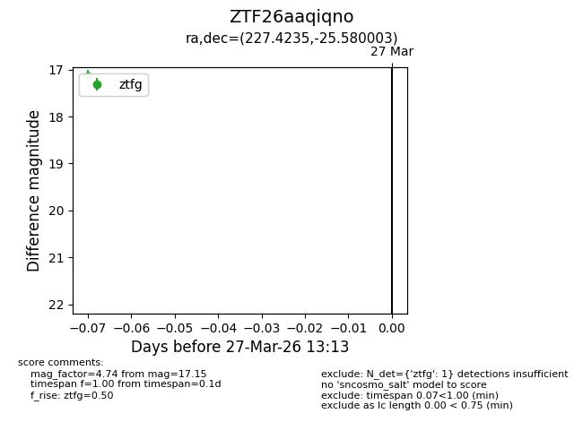
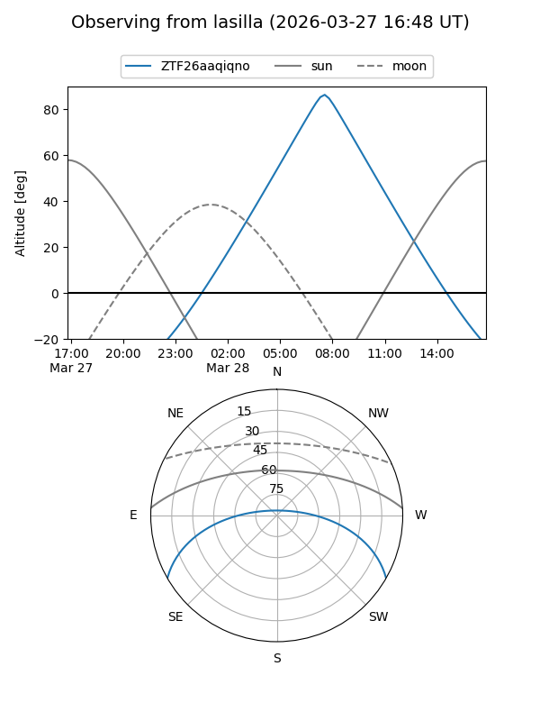
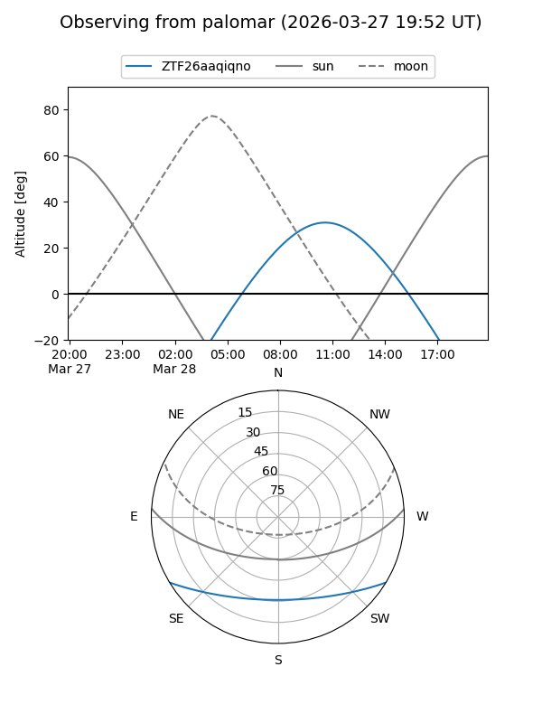

ZTF26aaqiqno
Target ZTF26aaqiqno at 2026-03-27 13:15
Aliases and brokers:
FINK: link
Lasair: link
ALeRCE: link
alt names
ZTF26aaqiqno (ztf,fink_ztf)
Coordinates:
equatorial (ra, dec) = 227.4235,-25.58000
equatorial (HMS+DMS) = 15:09:41.65,-25:34:48.01
galactic (l, b) = (338.2231,+27.65727)
Flags:
Photometry:
last ztfg=17.15
1 ztfg detections
Lightcurve

Visibility


Additional plots